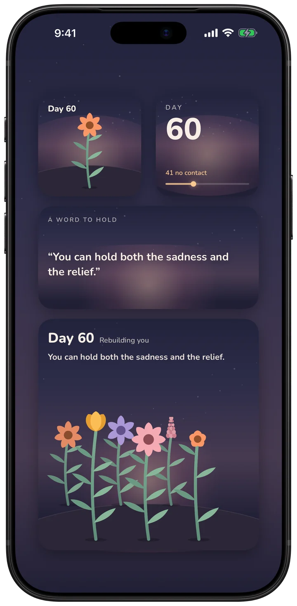
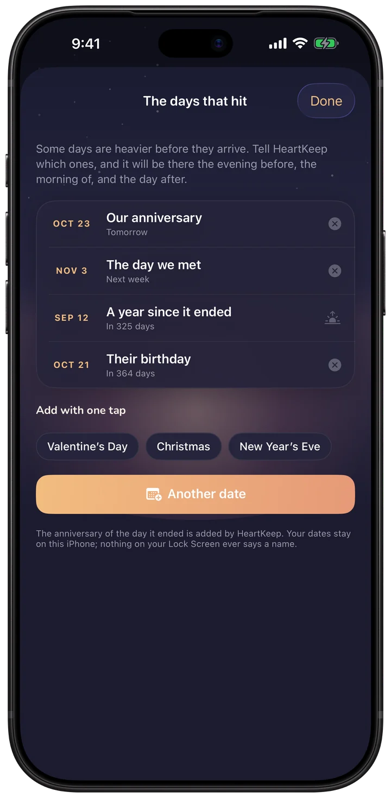
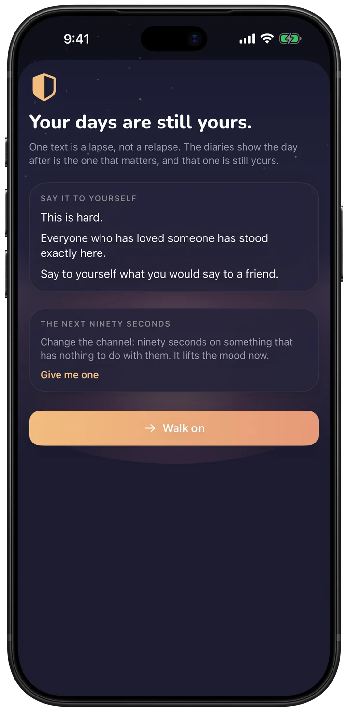

HeartKeep is an iPhone app for the weeks after a breakup. It counts your days of no contact, and a garden grows with every day you keep.
It remembers the hard days, like a birthday or an anniversary, and is there the evening before. If you slip, you log it and land on the days you kept. There is a daily check-in, a journal, and letters you never send. Quiet hours, part of Plus, puts a pause in front of the apps where you end up looking, at night and on the days that hit. Everything stays on your iPhone. There is no account and no AI chat.

Every day you keep, it grows
A garden on your Home Screen, under a sky that follows the clock.

It remembers the hard days
Their birthday, the anniversary, the holidays. There the evening before.

A slip is a lapse, not a zero
Log it and land on the days you kept.
The details
Price
Free. Plus is optional: $9.99 once (US price). No subscription. Plus adds Quiet hours, your journal as a PDF and your check-ins as a CSV.
Checked against the App Store listing on November 18, 2026 (version 3.5.0).
Support
Found a bug, or want something added? Email me at minieriapps+heartkeep@gmail.com. I make HeartKeep on my own and read every message. Give me a couple of days to reply.
Common questions
Is there a subscription? No. HeartKeep's core is free, and "HeartKeep Plus" is a one-time purchase, never a recurring charge.
Where is my data? Only on your iPhone. There is no account and no server.
Do I have to use the faith features? No. They're off by default and fully optional.
How do I move my data to a new phone? Use Export (HeartKeep Plus) to save a copy, or restore from an encrypted iPhone backup.
In crisis?
HeartKeep is a self-care tool, not a substitute for professional help. If you're struggling, please reach out to a qualified professional or a crisis line such as 988 (Suicide & Crisis Lifeline, US). You deserve real support.
Privacy Policy
The short version: everything stays on your device.
Last updated: November 18, 2026
What we collect
Nothing. HeartKeep has no account, no login, and no backend. Your check-ins, journal entries, unsent letters, and settings live only on your iPhone.
What leaves your device
Nothing, in normal use. No analytics, no ad SDKs, no trackers, no network requests for your content. The only exceptions are actions you explicitly take: exporting a file, tapping share, or making the optional one-time purchase (handled by Apple, who never shares your payment details with us).
Quiet hours and Screen Time
Quiet hours is optional. If you turn it on, iOS asks for Screen Time access and you pick the apps in Apple's own picker. HeartKeep gets a private token for each choice, enough to put the pause in front of it. It cannot see which apps you picked or how you use them, and nothing about it leaves your iPhone. You can switch Quiet hours off any time.
Notifications & Face ID
Reminders are scheduled locally on your device. If you enable the app lock, authentication is handled entirely by iOS. We never see your Face ID data or passcode.
Children's privacy
HeartKeep collects no data from anyone, including children.